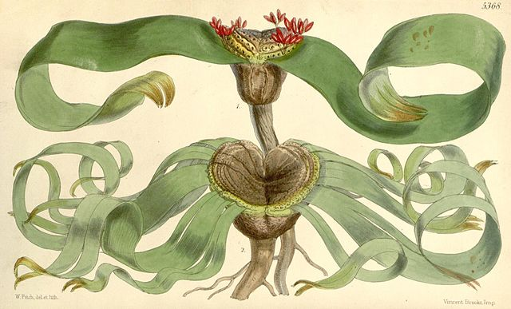
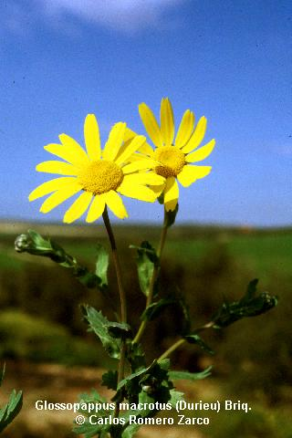
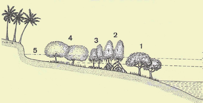
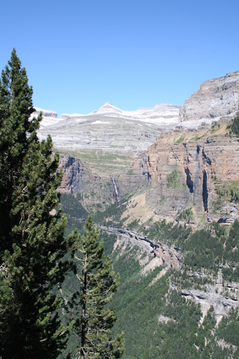

| Los guiones enlazados en esta página se distribuyen bajo una licencia de Creative Commons Reconocimiento-NoComercial-SinObraDerivada 4.0 Internacional. Solo puedes compartirlos sin modificaciones, reconociendo su autoría y sin obtener beneficio económico directo o indirecto. |
| I.-
Evolución de las cormofitas |
|
|
|
 Drago que existió frente a las Puertas de
Tierra (Cádiz). C.R.Z.
|
| II.- Sistemática de helechos | |||||||||||
|
 Segmentos de una fronde de
Asplenium onopteris. C.R.Z. |
||||||||||
| III.- Sistemática
de Gimnospermas |
|||||||
 Dominio público, https://commons.wikimedia.org |
 Abies pinsapo (Srra. de las Nieves) C.R.Z. |
||||||
| IV.- Sistemática
de Angiospermas |
|
|
Nota: clasificación de las angiospermas según APG IV |
 |
| V.- Geobotánica |
|||||||||
 Zonación de la vegetación en un manglar. De Walter (1994) |
 Límite de la vegetación arbórea en el Valle de Ordesa. C.R.Z. |
||||||||